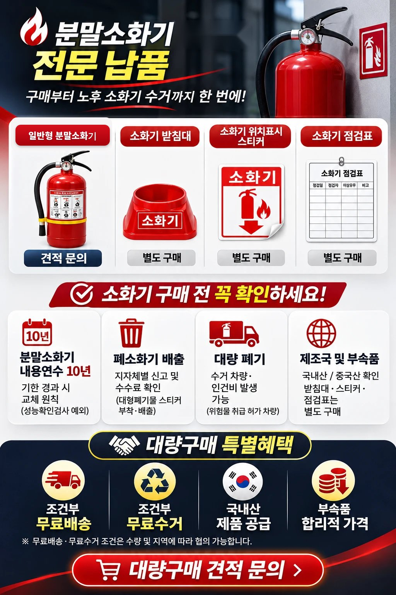
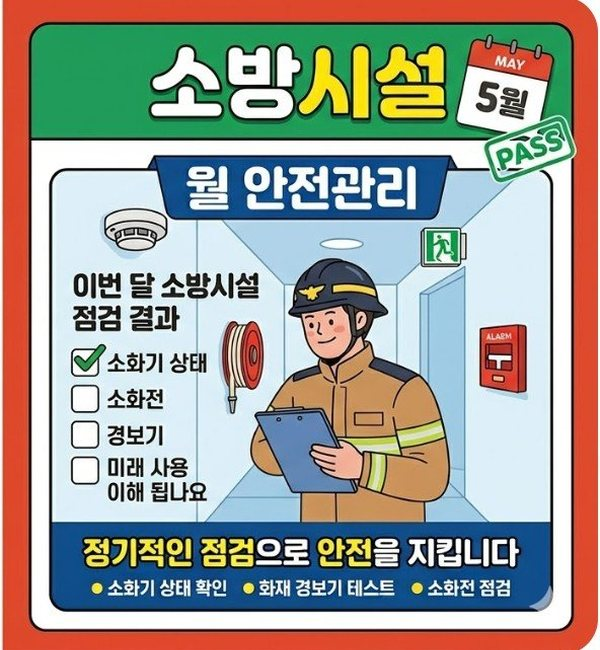
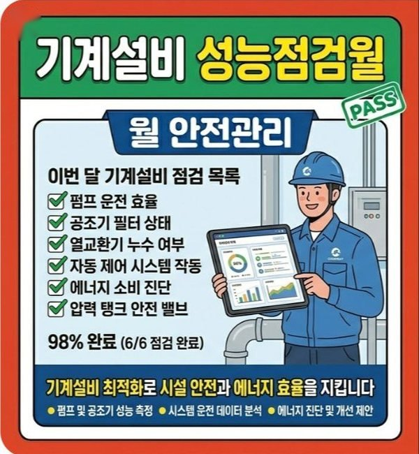
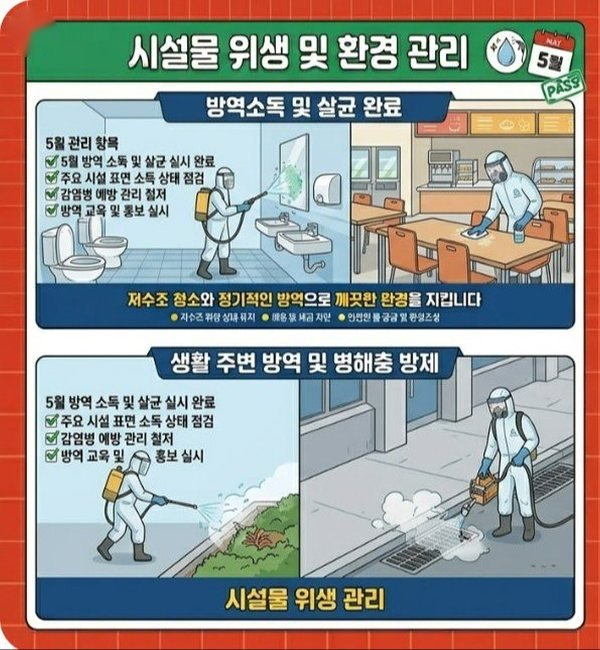

01-01
소방점검
“소방점검은 법적 의무를 채우는 일이 아니라, 재난에서 사람과 재산을 지키는 가장 확실한 예방책입니다.”
개정 소방법령 반영
「소방시설 설치 및 관리에 관한 법률」에 따라 특정소방대상물은 주기에 맞춰 작동점검·종합점검을 실시하고 결과를 보고해야 합니다.
점검 후 바로 보수
일반 업체는 불량 내역만 남기고 떠나지만, 달인명인은 점검 즉시 달인 보수팀과 연결해 지적사항까지 마무리합니다.
정직한 원인 진단
무조건적인 대형 공사나 전체 교체를 권하지 않고, 선로 쇼트·미세 유격 같은 근본 원인만 짚어냅니다.
월간 관리 연계
일회성 점검으로 끝나지 않고 월간 정기 관리(구독)로 다음 점검까지 상태를 유지합니다.
| 점검 분류 | 주요 점검 항목 | 핵심 포인트 |
|---|---|---|
| 작동점검 | 감지기 작동 시험, 소화전 앵글밸브·호스, 유도등 점등, 비상방송 연동 테스트 | 경보·피난 계통 이상 유무 확인 |
| 종합점검 | 소화펌프 체절·정격운전 성능시험, 알람·프리액션밸브 압력 셋팅, 수신기 회로 전압·절연저항 계측 | 화재안전성능기준(NFPC)에 맞춘 성능 검증 |
| 전기·기계 계통 | 방화셔터 2단 하강 연동, 제연 댐퍼·풍압, 스프링클러 살수 장애, 가스계 약제량 | 건물 전체 방화구획 입체 점검 |
진행 절차 5단계
- 점검 계획
건축물대장·소방 도면 사전 분석
- 현장 계측
소방시설관리사와 전문 장비로 검사
- 지적 정리
불량 사항을 데이터로 정리
- 보고서 제출
관할 소방서 결과 보고 대행
- 보수 연계
달인 보수팀이 지적사항 이행
 달인
달인이 서비스의 담당 달인 · 소방안전관리 대행
강현준 달인매월 100개 건물
“현장 출동·경보 대응까지 하는 진짜 전문가.”
- 매월 100개 건물 소방 점검·안전관리
- 전기 + 소방 (점검·공사·안전관리)
- 경보 오작동 현장 출동 대응
- 월간 점검·기록 관리
- 경보 오작동 현장 출동 대응
- 작동·종합점검 일정과 소방서 대응
매월 100개 건물의 소방시설 점검과 안전관리를 직접 수행하며 지적사항 사전 차단.
01-02
소방셀프점검
“소방점검, 비용 때문에 고민이신가요? 직접 점검할 수 있는 건물이라면 장비와 보고서를 지원해 드립니다.”
합리적인 비용 10만원
점검장비 대여 + 관계인 직접 점검 지원 + 결과보고서 작성 지원 포함.
점검 장비 배송
열·연기 감지기 시험기 등 필요한 장비를 건물로 보내드립니다.
동영상·매뉴얼 가이드
소방 지식이 없어도 따라 할 수 있는 점검 순서를 안내합니다.
전문가 서류 검토
소방서 제출용 작동점검 결과보고서를 전문가가 검토합니다.
| 구분 | 내용 |
|---|---|
| 점검 대상 | 대통령령으로 정하는 특정소방대상물 (연 1회 이상) |
| 점검 시기 | 건축물 사용승인일이 속하는 달의 말일까지 |
| 결과 제출 | 점검 완료 후 정해진 기한 내 관할 소방서 제출 |
⚠️ 셀프점검은 관계인이 직접 점검할 수 있는 대상에 한합니다. 종합점검 대상 등은 관리업자 등이 점검해야 하므로 먼저 대상 여부를 확인해 드립니다.
달인이 서비스의 담당 달인 · 소방안전관리 대행
강현준 달인매월 100개 건물
“현장 출동·경보 대응까지 하는 진짜 전문가.”
- 매월 100개 건물 소방 점검·안전관리
- 전기 + 소방 (점검·공사·안전관리)
- 경보 오작동 현장 출동 대응
- 월간 점검·기록 관리
- 경보 오작동 현장 출동 대응
- 작동·종합점검 일정과 소방서 대응
매월 100개 건물의 소방시설 점검과 안전관리를 직접 수행하며 지적사항 사전 차단.
01-03
소화기 납품

분말소화기 전문 납품 — 구매부터 노후 소화기 수거까지 한 번에!
일반형 분말소화기: 견적 문의 / 소화기 받침대 · 소화기 위치표시 스티커 · 소화기 점검표: 별도 구매
소화기 구매 전 꼭 확인하세요: 분말소화기 내용연수 10년(기한 경과 시 교체 원칙, 성능확인검사 예외), 폐소화기 배출(지자체별 신고 및 수수료 확인, 대형폐기물 스티커 부착·배출), 대량 폐기(수거 차량·인건비 발생 가능, 위험물 취급 허가 차량), 제조국 및 부속품(국내산/중국산 확인, 받침대·스티커·점검표는 별도 구매)
대량구매 특별혜택: 조건부 무료배송, 조건부 무료수거, 국내산 제품 공급, 부속품 합리적 가격. 무료배송·무료수거 조건은 수량 및 지역에 따라 협의 가능합니다.
 달인
달인이 서비스의 담당 달인 · 소방공사·보수
이이철 달인현장 30년
“사람의 생명과 직결된 일, 최고의 전문성으로 지킵니다.”
- 전기기사 + 소방설비기사(기계·전기) 쌍기사
- 소방 보수·수리 현장 30년
- 드라이버 하나로 손쉽게 처리하는 해결사
- 회로 계통 진단으로 근본 원인 해결
- 소방·전기 통합 시공
- 부품 교체보다 최소 비용 최대 효과
여러 업체가 해결하지 못한 문제를 회로 계통 진단으로 단 15분 만에 해결.

01-04
안전관리 월 대행
매월 방문 점검 + 기록·보고 + 소방서 대응 = 월 대행 하나면
소방안전관리자를 따로 두기 어려운 건물을 위해, 경험과 자격을 갖춘 달인이 매월 방문해 소방·전기·기계·승강기를 함께 살피고 점검 기록과 행정 대응까지 대신 챙깁니다.



안전관리대행이란?
법정 소방안전관리 업무를 경험과 자격을 갖춘 전문 인력이 체계적으로 대신 수행하는 서비스입니다. 자체 관리 인력 부족과 업무 부담을 줄이고, 법적 의무 이행과 실질적인 안전 관리를 동시에 실현합니다.
- 인력 부담 해소상주 관리자 없이도 매월 정해진 날 달인이 방문해 점검합니다.
- 법적 의무 이행월간 점검 기록, 작동·종합점검 일정, 서류 관리를 놓치지 않습니다.
- 긴급 상황 연결경보 오작동·정전·누수·승강기 멈춤 때 분야별 달인을 바로 연결합니다.
1. 분야별 관리 목표와 긴급 대응
| 분야 | 관리 목표 | 이럴 때 바로 연락하세요 |
|---|---|---|
| 소방 | 화재 예방 및 초기 대응 | 경보 울림·오작동, 스프링클러 물넘침 |
| 전기 | 전력 공급 안정화 | 정전 발생, 누전 차단기 작동 |
| 기계설비 | 냉난방 및 급수 관리 | 온수·난방 중단, 보일러 고장, 누수 |
| 승강기 | 이용자 안전 확보 | 운행 멈춤, 승객 갇힘 사고 |
2. 소방시설 월 안전관리 (필수 점검 항목)
| 구분 | 점검·관리 항목 | 관리 포인트 |
|---|---|---|
| 경보설비 | 자동화재탐지설비 작동 상태, 수신기 전원·표시등 | 감지기 오염·미동작 여부, 경보·고장 표시등 점등 확인 |
| 소화설비 | 소화기 외관·압력, 옥내소화전 밸브·호스 | 분실·파손, 압력 게이지 정상 범위(녹색), 밸브 개폐와 호스 누수·경화 확인 |
| 피난설비 | 유도등·비상조명 점등, 피난통로 확보 | 상시 점등과 예비전원 작동, 계단·복도 적치물 제거, 방화문 잠금 금지 |
| 전원·기타 | 비상전원·축전지, 소방시설 주변 관리 | 전압·충전 상태, 소화전 앞 적치 금지, 설비 훼손 확인 |
월간 점검 결과는 기록으로 남겨 작동점검·종합점검과 소방서 점검·지도 때 그대로 활용합니다.
3. 전기설비 월 안전관리 (전력 안정화)
| 구분 | 점검·관리 항목 | 관리 포인트 |
|---|---|---|
| 수변전 설비 | 수·변전실 청결·출입 통제, 변압기 상태 | 시건 장치·위험 표지 확인, 이상 소음·과열·진동·타는 냄새 확인 |
| 분전반 | 차단기 작동·외관, 부하설비 상태 | 차단기 트립 여부, 단자 조임, 과부하·발열 (열화상 체크 권장) |
| 비상발전기 | 시동용 배터리·연료, 무부하 시운전 | 배터리 전압·전해액 수위·연료량, 주 1회 이상 시운전과 RPM·주파수 확인 |
| 조명·부하 | 공용부 조명, 콘센트·배선 기구 | 깜빡임·미점등 램프 교체, 파손·탄화 흔적, 문어발식 사용 점검 |
4. 기계설비 월 안전관리 (냉난방 · 급수)
| 구분 | 점검·관리 항목 | 관리 포인트 |
|---|---|---|
| 보일러·열원 | 작동 상태·압력, 누수·이상음 | 점화 상태, 관수 수위, 압력계 정상, 배관 연결부 누수, 연소 시 이상 소음 |
| 펌프류 | 급수·순환 펌프 가동, 진동·소음 | 자동 운전 연동, 패킹부 누수, 베어링 소음, 모터 발열 |
| 배관·밸브 | 보온 상태·누수, 밸브 개폐 상태 | 보온재 탈락·손상, 밸브 부식, 상시 개방·폐쇄 위치 확인 |
| 물탱크 | 수위 제어·위생, 오버플로우 | 볼탭·전극봉 작동, 탱크 주변 청결, 만수 경보와 넘침 확인 |
5. 승강기 월 안전관리 (운행 안전)
| 구분 | 점검·관리 항목 | 관리 포인트 |
|---|---|---|
| 카 내부·외부 | 조작반·조명, 도어 개폐 | 버튼 작동, 비상통화장치 연결, 도어 열림·닫힘 소음과 걸림 |
| 기계실 | 권상기·제어반, 실내 환경 | 브레이크 작동, 오일 누유, 환기 상태, 빗물 유입 흔적 |
| 승강로·피트 | 누수·청결, 하부 리미트 스위치 | 피트 내 물 고임·쓰레기 적치, 안전 스위치 간섭 여부 (전문가 동행 시) |
6. 대행 대상과 주요 업무
| 구분 | 내용 |
|---|---|
| 대행 대상 시설 | 소방안전관리자 선임 대상 건축물 · 상가, 업무시설, 공장, 공동주택 · 다중이용시설 및 특정소방대상물 · 전문적인 안전관리 체계가 필요한 사업장 |
| 주요 대행 업무 | 소방안전관리자 법정 업무 대행 · 월간점검 및 점검 결과 관리 · 작동기능점검·종합정밀점검 일정 관리 · 소방 관계 법령 대응 및 서류 관리 · 소방서 점검·지도 대응 지원 |
자주 받는 질문
| 질문 | 답변 |
|---|---|
| “우리 건물도 대행이 되나요?” | 대행 가능 여부와 범위는 건물의 소방안전관리 등급과 규모에 따라 다릅니다. 건축물대장을 보내주시면 바로 확인해 드립니다. |
| “소방만 맡길 수도 있나요?” | 네. 소방시설 월 관리만 맡기셔도 되고, 전기·기계·승강기 월 점검을 함께 묶어 한 번에 관리할 수도 있습니다. |
| “점검에서 고장이 나오면요?” | 점검 기록과 사진으로 먼저 알려드리고, 고칠 수 있는 것은 고쳐 쓰는 방향으로 분야별 달인 보수팀이 견적 후 처리합니다. |
전문 인력에게 맡기는 것이 가장 안전한 선택입니다. 매월 같은 담당 달인이 방문해 건물 상태의 변화를 이어서 봅니다.
진행 절차 4단계
- 대상 시설 협의
시설 규모 및 관리 범위 확인
- 대행 계약
대행 범위 및 업무 내용 확정
- 정기 관리 수행
점검·기록·교육 등 지속 관리
- 보고 및 대응
관리 결과 보고 및 행정 대응
달인이 서비스의 담당 달인 · 소방안전관리 대행
강현준 달인매월 100개 건물
“현장 출동·경보 대응까지 하는 진짜 전문가.”
- 매월 100개 건물 소방 점검·안전관리
- 전기 + 소방 (점검·공사·안전관리)
- 경보 오작동 현장 출동 대응
- 월간 점검·기록 관리
- 경보 오작동 현장 출동 대응
- 작동·종합점검 일정과 소방서 대응
매월 100개 건물의 소방시설 점검과 안전관리를 직접 수행하며 지적사항 사전 차단.
OTHER DOORS
다른 문도 열어보세요
-
No. 02 FIRE WORKS
소방공사
교체하라는데, 고쳐 쓸 수는 없나요?
비상방송, 밸브, 방화셔터, 스프링클러, 수신기까지. 통째 교체 대신 원인을 고칩니다.


 담당 달인 경광순 · 정재서 · 김우리 외 2인
ENTER
담당 달인 경광순 · 정재서 · 김우리 외 2인
ENTER
-
No. 03 LEGAL INSPECTION
6대 법정점검
놓치고 있는 법정 의무는 없나요?
정보통신, 기계설비, 저수조, 소독방역, 공기질, 승강기. 매달 돌아오는 의무를 한 번에 챙깁니다.


 담당 달인 경광순 · 강경훈 · 박청수 외 3인
ENTER
담당 달인 경광순 · 강경훈 · 박청수 외 3인
ENTER
-
No. 04 BUILDING CARE
건물관리
관리비는 줄이고, 사고는 막을 수 없을까요?
보험부터 종합건물관리, 무인관리, 주차장, 청소·경비, 관리비 절감까지.

 담당 달인 이현 · 김명수 · 강경훈 외 4인
ENTER
담당 달인 이현 · 김명수 · 강경훈 외 4인
ENTER